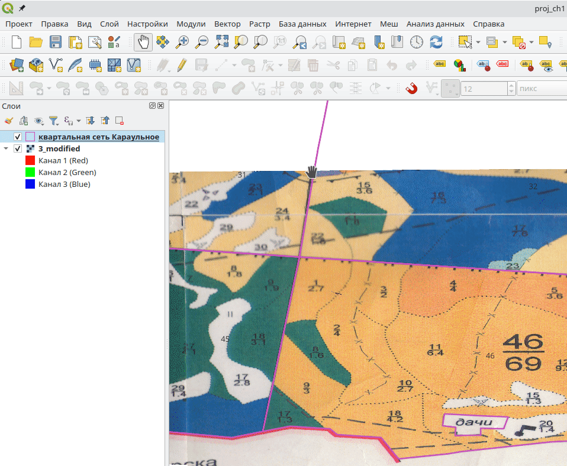
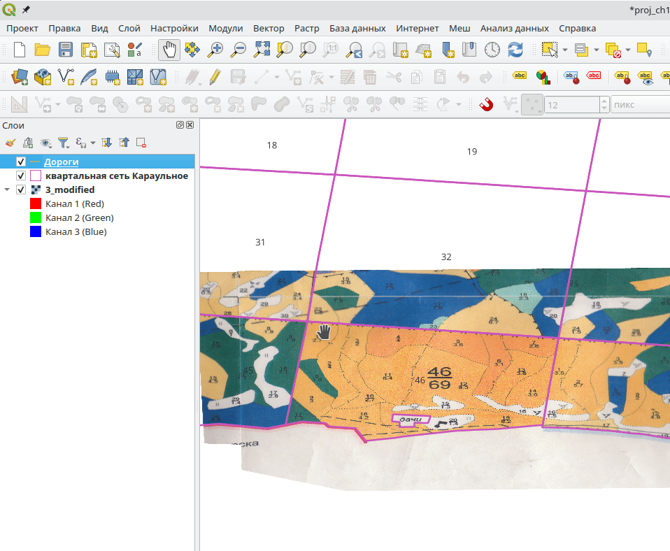
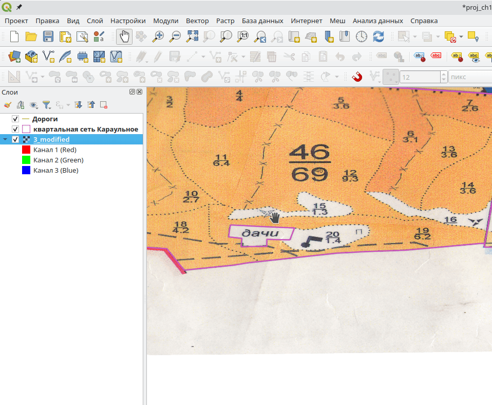
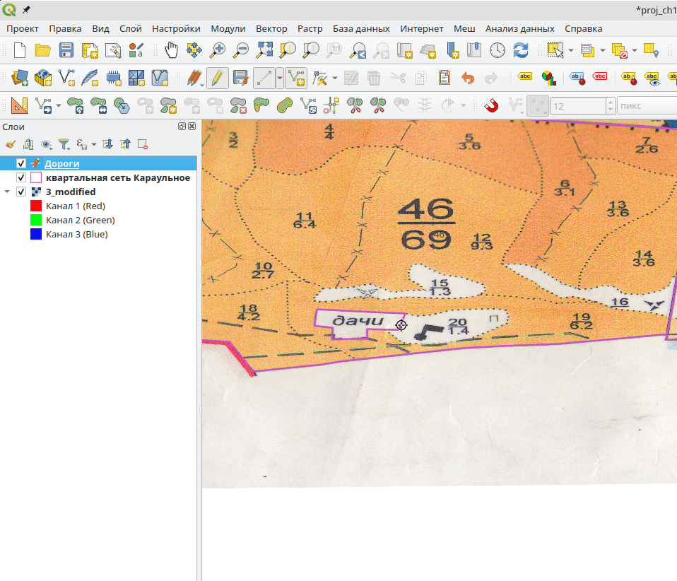
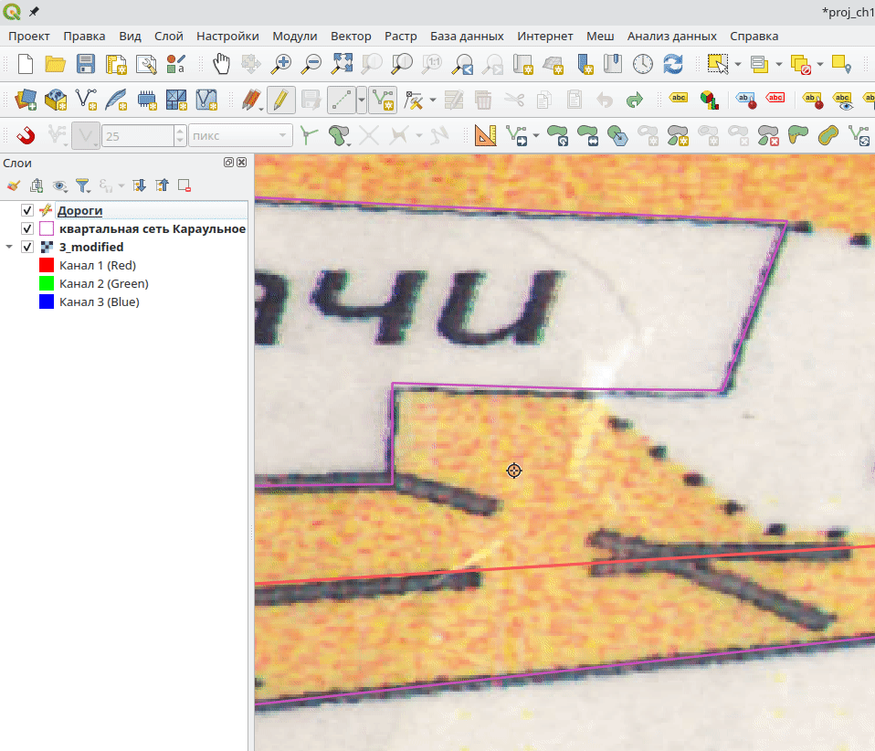
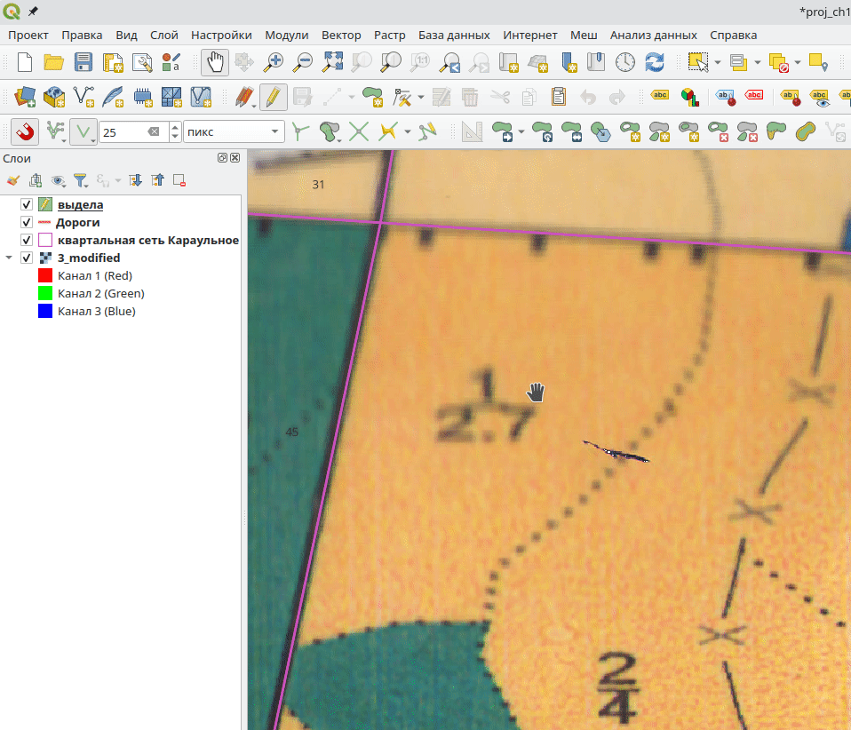

2 Векторизация
Векторизация изображения — перевод из растрового формата в векторный. При этом все объекты плана отображаются в виде точек, линий или полигонов, а у каждого объекта имеются атрибутивные данные, которые содержат дополнительные характеристики.
2.1 Создание векторного слоя
Мы начнем оцифровку с линейных объектов. В перечень их входят дороги и ручьи. Для начала создадим дополнительный векторный слой, на котором будем отмечать ручьи, для этого переходим во вкладку “Слой” > “Создать слой” > “Создать слой Shapefile…”. В поле имя файла следует нажать на иконку …, после чего выбрать папку для сохранения файла, ввести название (например “Дороги”, в зависимости от содержащихся в слое объектов).
При создании нового векторного слоя всегда явно указывайте путь его сохранения. Для этого в поле “Имя файла” нажмите …, выберите папку для сохранения и затем введите название файла. Сохраните файл в папку проекта!
В поле “Тип геометрии” необходимо выбрать какой тип геометрии будет содержать создаваемый слой. Один слой может содержать объекты только одного типа: точечная, линия или полигон (площадная). Задайте тип геометрии “Линия”, в области «Новое поле» введите “Имя” - “name”, «Тип» – “Текст”, размер можно оставить без изменений (80 символов). После этого нажимаем на иконку “Добавить в список полей”, поле с заданными параметрами появится в области “Список полей”. Теперь слой содержит два поля: id - создается по умолчанию и добавленное поле name в которое будут записываться названия объектов. Для удаления полей предусмотрена иконка “Удалить поле” (Рисунок 2.1). После задания всех параметов нажмите ОК, новый слой будет сохранен на диск и появится в панеле “Слои”.

Список полей отражает атрибуты (характеристики), которые возможно заполнить при создании объекта. Создавая очередной векторный слой, полезно задать минимальное необходимое количество полей, характеризующий каждый отдельный объект. Дополнительные поля можно добавить в любой момент после создания векторного слоя в контекстном меню “Открыть таблицу атрибутов”. Несмотря на то, что добавить или удалить поля атрибутивных данных можно после создания слоя, тип отдельного поля и его настройки (имя, длина, точность) изменить невозможно. Поэтому к настройкам полей нужно подходить внимательно. Тип поля может быть текстовым, целочисленным, десятичным числом или датой. “Размер” поля определяет количество символов, которое может храниться в этом поле, “Точность” - количество знаков после запятой (Рисунок 2.1).
Создайте новый слой “Дороги.shp”, как показано выше. Сохраните его в папку с проектом.
Завершив настройку нового слоя, нажимаем «ОК». Новый слой автоматически появится в «Панели слоев» основного окна QGIS. Отображение слоев на карте зависит от их порядка в панели слоев, поэтому векторные слои должны быть всегда выше чем растровые. Отключить видимость слоя можно сняв chekbox (флажок) слева от него (Рисунок 2.2).

Если Вы не можете найти ту или иную панель в главном окне программы, возможно она не активирована. Для отображения панели перейдите во вкладку “Настройки”, в пунктах “Панели” или “Панели инструментов” поставьте chekbox (флажок) напротив нужной панели и она появится в главном окне программы.
2.2 Векторизация линейных объектов
Для векторизации используют панель “Инструменты оцифровки” 
Выбор слоя для добавления или изменения геометрий произволится в Панеле слоев. Выделяем созданный векторный слой (Дороги), в “Инструментах оцифровки” нажимаем на иконку “Режим редактирования”  . После активации режима редактирования “Инструменты оцифровки” становятся активны и появляется возможность добавлять или изменять объекты слоя. “Режим редактирования” выполняет роль предохранителя. Пока он не активирован, слой находится в режиме просмотра и не может быть изменен. Таким образом данные защищены от нежелательных случайных изменений.
. После активации режима редактирования “Инструменты оцифровки” становятся активны и появляется возможность добавлять или изменять объекты слоя. “Режим редактирования” выполняет роль предохранителя. Пока он не активирован, слой находится в режиме просмотра и не может быть изменен. Таким образом данные защищены от нежелательных случайных изменений.
Панель “Инструменты оцифровки” состоит из следующих инструментов: “Сохранить правки слоя” - при нажатии сохраняются изменения в объектах слоя; “Добавить объект” - позволяет добавить объект (точка, линия или полигон в зависимости от типа геометрии слоя); “Инструмент правки вершин” - позволяет передвигать или удалять отдельные вершины геометрий; “Удалить выделенное”; “Отменить” и другие.
Находим на плане дорогу и применяя инструмент “Добавить объект” добавляем линию, отмечая точки вдоль изображения дороги на растровом слое. Во время добавления объекта масштаб карты можно менять прокруткой колеса мышки, перемещаться по плану — удерживая клавишу пробел. Добавление объекта завершается нажатием правой кнопки мыши, после чего появится окно ввода атрибутивной информации этого объекта. Если у дороги на плане есть название, его следует ввести в поле “name”. В противном случае поля можно не заполнять и просто нажать ОК. Первый объект в виде дороги будет добавлен (Рисунок 2.3).

По умолчанию вновь созданные слои имеют тонкие линии и случайный цвет. Эти настройки можно изменить в контекстном меню слоя (правый «клик» в панеле слоев), пункт “Свойства” > “Стиль”. В этом окне можно изменить цвет и толщину линии. Так же существует масса других настроек, они будут рассмотрены в последующих разделах. Измените цвет и увеличьте толщину линий до 0,86 (Рисунок 2.4).

Для сохранения прогресса векторизации рекомендуется периодически использовать инструмент “Сохранить правки слоя”  , который записывает все изменения в файл. Таким образом прогресс не будет потерян, но после сохранения отменить изменения будет невозможно.
, который записывает все изменения в файл. Таким образом прогресс не будет потерян, но после сохранения отменить изменения будет невозможно.
Используйте инструмент “Сохранить правки слоя” с осторожностью, охраненные изменения невозможно будет отменить!
Оцифруйте одну дорогу в границах одного кваратала. Измените цвет (выберите любой) и толщину линий слоя, как показано выше.
2.3 Топология объектов
При оцифровке важно соблюдать топологию объектов. Например, в месте соединения двух дорог они должны иметь общую точку, а между границами выделов не должно быть пустот или наложений. Для соблюдения топологии оцифровки объектов применяется панель “Инструменты прилипания”. 
Инструмент “Разрешить прилипание” активирует возможности топологического редактирования, после чего остальные инструменты на панеле становятся активны. Возможна настройка прилипания к объектам на всех слоях или только на текущем слое, к вершинам, сегментам или другим элементам геометрий, порог прилипания позволяет задать радиус прилипания и единицы измерения этого радиуса. Инструмент “Вычитать наложения на текущем слое” позволяет избежать наложения полигонов друг на друга, функция “Включить трассировку” дает возможность добавлять новые геометрии по границам уже существующих геометрий. Настроим “Инструменты прилипания” следующим образом. Прилипание К текущему слою, прилипание к вершинам и к линиям, порог прилипания 25 пикселей. Теперь при добавлении нового объекта и приближении указателя на расстояние менее 25 пикселей к уже существующей линии, курсор «приклеится» к ней. Такие настройки позволяют избежать разрывов в линиях. Используя полученные навыки, можно векторизировать оставшиеся дороги топологически корректно. Таким же образом создается отдельный векторный слой для векторизации рек или иных линейных объектов, которые существуют на карте (Рисунок 2.5).

Оцифруйте оставшиеся дороги в границах квартала используя прилипание к уже существующим дорогам. Аналогично оцифруйте реки в приделах квартала (создайте новый векторный слой под названием “Реки.shp”, добавьте поле name, заполните его названием реки).
2.4 Векторизация полигонов
После векторизации линейных объектов, подобным образом векторизуют площадные объекты (лесные выдела). Для этого создается отдельный векторный слой с названием “выдела”, тип геометрии - Площадная (полигон). В атрибутивной информации добавьте одно поле с номерами выделов: “имя” — “videl”, тип — целое число, размер — 2. Сохраните слой в папку проекта. В панеле “Инструменты прилипания” находятся инструменты для топологически корректной оцифровки.
Инструмент “Включить трассировку” позволяет проводить границу вдоль уже существующих геометрий. Если требуется создать общую границу - настройку Offset следуют оставить по умолчанию (0,000000) в противном случае новая линия будет проведена на указанном в настройке расстоянии от уже существущей геометрии. Этот инструмент не всегда работает предсказуемо, поэтому при его использовании следует внимательно следить за результатом (Рисунок 2.6).

Функция “Вычитать наложения на текущем слое” позволяет оцифровывать полигоны без пересечений. При добавлении нового полигона поверх существующего он будет обрезан по границе второго. Такая настройка позволяет проводить оцифровку сплошных площадей, состоящих их множества участков, без наложений и разрывов (Рисунок 2.7).
Функция “Вычитать наложения на текущем слое” не работает с геометриями содержащими ошибки. См. Глава 2.6.

После создания геометрии можно воспользоваться инструментом “Редактирование вершин” позволяющим изменять положение вершин и сегментов, добавлять и удалять вершины (Рисунок 2.8).

Инструмент “Включить топологическое редактирование” дает возможность перемещать вершины смежных полигонов топологически корректно, как одну общую вершину (Рисунок 2.9).

В процессе оцифровки периодически случаются ошибки при расстановке вершин геометрии. Если геометрия еще не создана, последнюю установленную вершину можно удалить нажатием клавиши Backspace на клавиатуре (Рисунок 2.10).

Топологически корректно оцифруйте выдела на территории квартала. При оцифровке не забывайте сразу проставлять номера выделов во всплывающем окне (поле “videl”).
2.5 Панель выбора объектов
Для выделения объектов используется Панель выбора объектов  Первый инструмент Выбрать объекты в прямоугольнике или точке позволяет выделить объект или группу объектов на карте. Для удаления выделенных объектов нажмите клавишу Delete или выберите инструмент Удалить выделенное в панеле Инструменты оцифровки. При этом слой должен находиться в режиме редактирования, в противном случае удаление будет невозможно. Отмена выделения выполняется инструментом Снять выделение…, так же отменить выделение можно нажав на пустую область без объектов. Выбор объектов можно производить как точечно, так и в некоторой области (полигоне). Точечный выбор нескольких объектов выполняется при нажатой клавише Control (Ctrl) (Рисунок 2.11).
Первый инструмент Выбрать объекты в прямоугольнике или точке позволяет выделить объект или группу объектов на карте. Для удаления выделенных объектов нажмите клавишу Delete или выберите инструмент Удалить выделенное в панеле Инструменты оцифровки. При этом слой должен находиться в режиме редактирования, в противном случае удаление будет невозможно. Отмена выделения выполняется инструментом Снять выделение…, так же отменить выделение можно нажав на пустую область без объектов. Выбор объектов можно производить как точечно, так и в некоторой области (полигоне). Точечный выбор нескольких объектов выполняется при нажатой клавише Control (Ctrl) (Рисунок 2.11).

Панель выбора объектов так же содержит инструменты для выбора по атрибутам и положению объектов. Возможности такого выбора будут рассмотрены в будущих разделах.
2.6 Ошибки геометрий
При оцифровке объектов могут возникать ошибки геометрий. В QGIS, большинство инструментов работы с векторными слоями не будут работать со слоями содержащими ошибки геометрий. Для выявления таких ошибок существует инструмент Вектор > Обработка геометрии > Проверка геометрии… который создает три временных слоя с указаниями на объекты с корректными и некорректными геометриями. Исправить такие геометрии можно как вручную, так и при помощи инструмента “Исправить геометрии” в панеле “Инструменты анализа”  . Иногда для исправления некоторых ошибок создают буфер нулевого радиуса вокруг объектов. Наиболее распространенные ошибки геометрий следующие:
. Иногда для исправления некоторых ошибок создают буфер нулевого радиуса вокруг объектов. Наиболее распространенные ошибки геометрий следующие:
- Задвоение точек - геометрия содержит две точки с одинаковыми координатами;
- Самопересечение линий - линия пересекает саму себя;

- Самопересечение полигонов - полигон пересекает сам себя;

- Висячая линия в полигоне - полигон содержет в своем контуре линию.

Ошибки геометрий подсвечиваются знаком “X” зеленого цвета. Нужно отметить, что некоторые инструменты прилипания (например “Вычитать наложения на текущем слое”) не работают с геометриями содержащими ошибки.
Проверьте созданные слои (дороги, реки, выдела) на наличие ошибок геометрий. В случае обнаружения ошибок, устраните их.